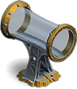
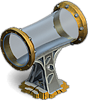
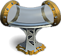
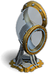
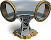
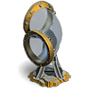

Получено: файл; исходный URL. Файл получен без перекодирования; авторство отдельно не установлено. Если в статье исходная ссылка ведёт на другой хост, побайтовое совпадение не проверено. Страница: источник.


Стекольная печь — Святилище
историческая браузерная социальная игра; платформа и редакция уточняются- Тип
- Постройка
- Версия и дата
- историческая браузерная социальная игра; платформа и редакция уточняются
Дополнительные изображения


















Данные по источнику · браузерная игра; платформа не уточнена · дата публикации указана в URL, дата дальнейших правок неизвестна
Предварительно: Фанатский источник; возможны опечатки, поздние изменения и отличия платформ. Вероятности выпадения не установлены.. Требуется сверка.
- Место
- Недостроенная печь на Святилище; уровень 2, покупка и продажа невозможны.
- Строительство
- 1: 35 стекла, 6 предметов «Солнце» из Японской коллекции, 145 блоков — 10 опыта. 2: 165 камней, 15 огня, 25 пороха — 10 опыта.
- Назначение
- В печи создаются шесть разновидностей труб для трубопровода. Не путать с материалом «Стеклянная труба» и обычной строительной трубой; рецепты их создания в этой статье не указаны.
Связанные сущности
- Святилище — локация объекта по статье